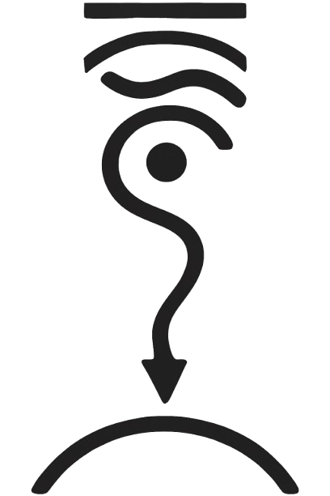

Welcome my friend!
Yoga and Meditation teacher | fire performance
After a decade of traveling and learning about yoga and spirituality,
I am back in Switzerland.
We are constantly bombarded with information - News, TV, social media etc.
Yoga is a method to bring our awareness back to ourselves.
So that we can stay present, make conscious decisions to create our life,
and are less likely to be influenced and manipulated.
I offer private and group classes in German as well as English.
If you are curious please reach out to me:
WhatsApp: +4915238483253
Instagram: iamanam_on_earth
Also have a look at my Patreon page;
